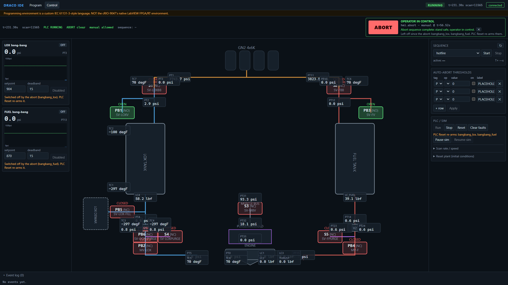
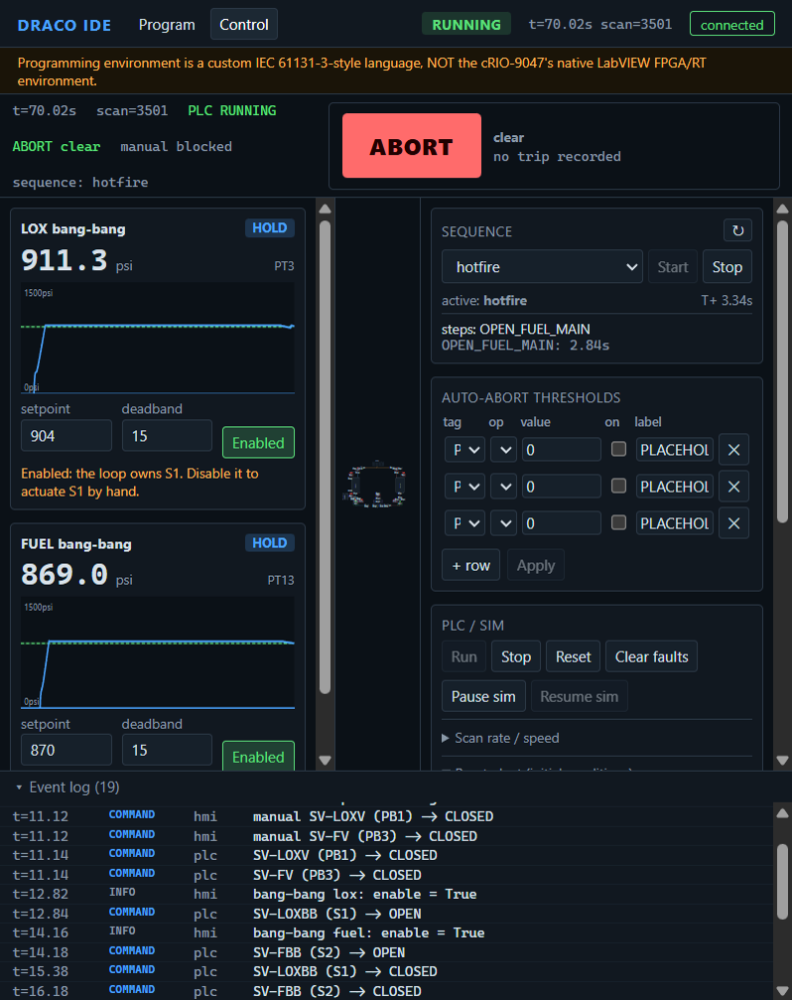

<title>Draco Simulator Integration Review</title>
<link rel="preconnect" href="https://fonts.googleapis.com">
<link rel="preconnect" href="https://fonts.gstatic.com" crossorigin>
<link rel="stylesheet" href="https://fonts.googleapis.com/css2?family=Barlow+Semi+Condensed:wght@500;600;700&family=IBM+Plex+Mono:wght@400;500;600&family=IBM+Plex+Sans:ital,wght@0,400;0,500;0,600;1,400&display=swap">
<style>
  :root {
    --paper: #F3F6F8;
    --panel: #FFFFFF;
    --ink: #14202B;
    --ink-2: #46586A;
    --ink-3: #697A88;
    --rule: #CBD5DD;
    --frame: #14202B;
    --accent: #1B6DA1;
    --accent-tint: #8DB9D8;
    --on-accent: #FFFFFF;
    --ok: #2E7A4D;
    --ok-soft: #DEEFE5;
    --warn: #A35B0B;
    --warn-soft: #F5E8D6;
    --crit: #B0302A;
    --crit-soft: #F6E0DE;
    --decide: #664796;
    --decide-soft: #EAE3F5;
    --code: #E8EDF1;
    --font-display: "Barlow Semi Condensed", "Arial Narrow", "Roboto Condensed", sans-serif;
    --font-body: "IBM Plex Sans", "Segoe UI", system-ui, -apple-system, sans-serif;
    --font-mono: "IBM Plex Mono", ui-monospace, "Cascadia Mono", Consolas, monospace;
    color-scheme: light;
  }
  @media (prefers-color-scheme: dark) {
    :root:not([data-theme="light"]) {
      --paper: #0D141A; --panel: #121B23; --ink: #DCE5EC; --ink-2: #A4B3BF; --ink-3: #82919D;
      --rule: #26333E; --frame: #8FA1AF; --accent: #63B1E2; --accent-tint: #3A6F93; --on-accent: #0D141A;
      --ok: #6BC592; --ok-soft: #14301F; --warn: #E9A254; --warn-soft: #35250F;
      --crit: #F27C72; --crit-soft: #3A1C1A; --decide: #B89AE5; --decide-soft: #281E39; --code: #0F1921;
      color-scheme: dark;
    }
  }
  :root[data-theme="dark"] {
    --paper: #0D141A; --panel: #121B23; --ink: #DCE5EC; --ink-2: #A4B3BF; --ink-3: #82919D;
    --rule: #26333E; --frame: #8FA1AF; --accent: #63B1E2; --accent-tint: #3A6F93; --on-accent: #0D141A;
    --ok: #6BC592; --ok-soft: #14301F; --warn: #E9A254; --warn-soft: #35250F;
    --crit: #F27C72; --crit-soft: #3A1C1A; --decide: #B89AE5; --decide-soft: #281E39; --code: #0F1921;
    color-scheme: dark;
  }

  * { box-sizing: border-box; }
  body { margin: 0; background: var(--paper); color: var(--ink); font: 400 16px/1.6 var(--font-body); -webkit-font-smoothing: antialiased; }
  .page { max-width: 70rem; margin: 0 auto; padding-block: 40px 72px; padding-inline: 24px; display: grid; gap: 56px; }
  @media (max-width: 480px) { .page { padding-inline: 16px; gap: 44px; } }
  h1, h2, h3 { font-family: var(--font-display); text-wrap: balance; margin: 0; line-height: 1.12; color: var(--ink); }
  h1 { font-size: clamp(30px, 4.2vw, 42px); font-weight: 700; }
  h2 { font-size: 27px; font-weight: 600; }
  h3 { font-size: 19px; font-weight: 600; }
  p { margin: 0; }
  code { font-family: var(--font-mono); font-size: 0.88em; }
  .label { font: 600 12px/1.2 var(--font-display); letter-spacing: 0.1em; text-transform: uppercase; color: var(--ink-3); }
  section { display: grid; gap: 20px; min-width: 0; }
  .section-head { display: grid; gap: 8px; max-width: 46rem; }
  .section-head p { color: var(--ink-2); }
  [tabindex="0"]:focus-visible { outline: 2px solid var(--accent); outline-offset: 2px; }

  .titleblock { border: 2px solid var(--frame); background: var(--panel); display: grid; grid-template-columns: minmax(0, 1.55fr) minmax(0, 1fr); }
  .tb-name { padding: 24px 26px; display: grid; gap: 12px; align-content: start; border-right: 1px solid var(--frame); }
  .tb-name .lede { color: var(--ink-2); max-width: 42rem; }
  .tb-grid { margin: 0; display: grid; grid-template-columns: 1fr 1fr; gap: 1px; background: var(--rule); align-content: start; }
  .tb-grid > div { background: var(--panel); padding: 12px 16px; display: grid; gap: 5px; align-content: start; }
  .tb-grid > .wide { grid-column: 1 / -1; }
  .tb-grid dt { font: 600 11px/1.2 var(--font-display); letter-spacing: 0.11em; text-transform: uppercase; color: var(--ink-3); }
  .tb-grid dd { margin: 0; font-size: 14.5px; line-height: 1.4; display: flex; flex-wrap: wrap; gap: 6px; }
  .revs { width: 100%; border-collapse: collapse; font-size: 13.5px; line-height: 1.4; }
  .revs td { padding: 4px 0; border: 0; vertical-align: top; }
  .revs td:first-child { font: 600 13px var(--font-mono); width: 2.2em; }
  .revs td:nth-child(2) { font: 400 13px var(--font-mono); font-variant-numeric: tabular-nums; white-space: nowrap; padding-right: 12px; color: var(--ink-2); }
  .revs tr.old td { color: var(--ink-3); }
  @media (max-width: 780px) {
    .titleblock { grid-template-columns: 1fr; }
    .tb-name { border-right: 0; border-bottom: 1px solid var(--frame); padding: 20px 18px; }
  }

  .chip { display: inline-flex; align-items: center; font: 600 12px/1 var(--font-display); letter-spacing: 0.07em; text-transform: uppercase; padding: 5px 8px 4px; border-radius: 3px; border: 1px solid currentColor; white-space: nowrap; }
  .chip.ok { color: var(--ok); background: var(--ok-soft); }
  .chip.warn { color: var(--warn); background: var(--warn-soft); }
  .chip.crit { color: var(--crit); background: var(--crit-soft); }
  .chip.decide { color: var(--decide); background: var(--decide-soft); }

  .tag { font: 500 13px/1 var(--font-mono); padding: 2px 5px; border-radius: 2px; border: 1px solid var(--rule); background: var(--code); white-space: nowrap; }
  .tag.no { border-color: var(--ok); }
  .tag.nc { border-color: var(--crit); }

  .table-wrap { overflow-x: auto; background: var(--panel); border: 1px solid var(--rule); }
  table { width: 100%; border-collapse: collapse; font-size: 14.5px; line-height: 1.5; }
  th { text-align: left; font: 600 11.5px/1.2 var(--font-display); letter-spacing: 0.1em; text-transform: uppercase; color: var(--ink-3); padding: 11px 14px; border-bottom: 1px solid var(--frame); white-space: nowrap; }
  td { padding: 12px 14px; border-bottom: 1px solid var(--rule); vertical-align: top; }
  tr:last-child td { border-bottom: 0; }
  td.name { font-weight: 600; min-width: 10.5rem; }
  td.status { width: 1%; white-space: nowrap; }
  td.between { color: var(--ink-2); min-width: 11rem; }
  td.t, td.n { font-family: var(--font-mono); font-variant-numeric: tabular-nums; white-space: nowrap; }
  td.n, th.n { text-align: right; }
  td.muted { color: var(--ink-3); }
  tr.flag td { background: var(--warn-soft); }

  .decisions { list-style: none; margin: 0; padding: 0; border-top: 2px solid var(--frame); }
  .decisions li { display: grid; grid-template-columns: minmax(0, 1fr) auto; column-gap: 28px; row-gap: 6px; padding: 18px 0 20px; border-bottom: 1px solid var(--rule); }
  .decisions h3 { grid-column: 1; grid-row: 1; }
  .decisions .chip { grid-column: 2; grid-row: 1; align-self: start; }
  .decisions p { grid-column: 1; color: var(--ink-2); max-width: 48rem; }
  .decisions .asked { font-size: 14px; color: var(--ink-3); }
  @media (max-width: 640px) {
    .decisions li { grid-template-columns: 1fr; }
    .decisions .chip { grid-column: 1; grid-row: 2; justify-self: start; }
  }

  .split { display: grid; grid-template-columns: minmax(0, 1.4fr) minmax(0, 1fr); gap: 24px; align-items: start; }
  .split.shot-left { grid-template-columns: minmax(0, 23rem) minmax(0, 1fr); }
  @media (max-width: 900px) { .split, .split.shot-left { grid-template-columns: 1fr; } }
  .log { margin: 0; padding: 16px 18px; background: var(--code); border: 1px solid var(--rule); font: 400 12.5px/1.75 var(--font-mono); overflow-x: auto; color: var(--ink-2); white-space: pre; }
  .log .ab { color: var(--crit); font-weight: 500; }
  .log .sq { color: var(--accent); }
  .log .cm { color: var(--ink); }
  .log .vn { color: var(--warn); font-weight: 500; }
  .note { font-size: 14px; color: var(--ink-3); max-width: 46rem; }
  .stack-v { display: grid; gap: 16px; align-content: start; min-width: 0; }

  .diagram-wrap { overflow-x: auto; background: var(--panel); border: 1px solid var(--rule); padding: 18px 18px 10px; }
  .timing { display: block; width: 100%; min-width: 640px; height: auto; }
  .timing .rowline { stroke: var(--rule); stroke-width: 2; }
  .timing .vgrid { stroke: var(--rule); stroke-width: 1; stroke-dasharray: 2 4; }
  .timing .axis-line { stroke: var(--frame); stroke-width: 1; }
  .timing .bar { fill: var(--accent); }
  .timing .bar-t { fill: var(--on-accent); font: 500 11.5px var(--font-mono); }
  .timing .tagname { fill: var(--ink); font: 600 13px var(--font-mono); }
  .timing .fn { fill: var(--ink-3); font: 400 11px var(--font-mono); }
  .timing .axis { fill: var(--ink-3); font: 400 11px var(--font-mono); }

  .figures { display: grid; grid-template-columns: repeat(auto-fit, minmax(300px, 1fr)); gap: 32px; align-items: start; }
  figure { margin: 0; display: grid; gap: 14px; padding-top: 14px; border-top: 2px solid var(--frame); min-width: 0; }
  figcaption { font-size: 14px; color: var(--ink-2); }
  .shot { display: block; width: 100%; max-width: 100%; height: auto; border: 1px solid var(--rule); background: var(--code); }
  .shot.narrow { max-width: 23rem; }
  .stack { display: flex; height: 30px; border: 1px solid var(--frame); background: var(--panel); }
  .seg { flex-basis: 0; min-width: 0; box-shadow: inset -2px 0 0 var(--panel); }
  .seg:last-child { box-shadow: none; }
  .seg-ph, .sw-ph { background: var(--warn); }
  .seg-phys, .sw-phys { background: var(--ink-3); }
  .seg-pid, .sw-pid { background: var(--accent); }
  .seg-user, .sw-user { background: var(--accent-tint); }
  .seg-cal, .sw-cal { background: var(--ok); }
  .legend { list-style: none; padding: 0; margin: 0; display: grid; grid-template-columns: repeat(auto-fill, minmax(170px, 1fr)); gap: 8px 20px; font-size: 14px; }
  .legend li { display: grid; grid-template-columns: 11px 2ch auto; column-gap: 8px; align-items: center; }
  .swatch { width: 11px; height: 11px; }
  .legend b { font: 500 14px var(--font-mono); font-variant-numeric: tabular-nums; text-align: right; }

  .pair { display: grid; grid-template-columns: repeat(auto-fit, minmax(260px, 1fr)); gap: 20px; }
  .pair > div { display: grid; gap: 6px; min-width: 0; }
  .line-legend { list-style: none; margin: 0; padding: 0; display: flex; flex-wrap: wrap; gap: 6px 22px; font-size: 14px; color: var(--ink-2); }
  .line-legend li { display: flex; align-items: center; gap: 8px; }
  .line-legend svg { width: 28px; height: 10px; flex: none; }
  .chart { width: 100%; height: auto; display: block; }
  .chart .grid { stroke: var(--rule); stroke-width: 1; fill: none; }
  .chart .axis { fill: var(--ink-3); font: 400 11px var(--font-mono); }
  .ln-closed { stroke: var(--ink); stroke-width: 2.25; fill: none; }
  .ln-open { stroke: var(--accent); stroke-width: 2.5; fill: none; }
  .ln-uncal { stroke: var(--ink-3); stroke-width: 2; fill: none; stroke-dasharray: 5 4; }
  .pt-closed { fill: var(--ink); }
  .pt-open { fill: var(--accent); }
  .pt-uncal { fill: var(--panel); stroke: var(--ink-3); stroke-width: 1.5; }
  .end-closed { fill: var(--ink); font: 500 12px var(--font-mono); }
  .end-open { fill: var(--accent); font: 500 12px var(--font-mono); }
  .end-uncal { fill: var(--ink-3); font: 500 12px var(--font-mono); }

  .obs { margin: 0; padding: 0; list-style: none; display: grid; gap: 0; border-top: 2px solid var(--frame); }
  .obs li { display: grid; grid-template-columns: minmax(0, 1fr) auto; column-gap: 28px; row-gap: 6px; padding: 16px 0 18px; border-bottom: 1px solid var(--rule); }
  .obs h3 { font-size: 18px; }
  .obs p { color: var(--ink-2); max-width: 48rem; grid-column: 1; }
  .obs .chip { grid-column: 2; grid-row: 1; align-self: start; }
  @media (max-width: 640px) {
    .obs li { grid-template-columns: 1fr; }
    .obs .chip { grid-column: 1; grid-row: 2; justify-self: start; }
  }
  .questions { display: grid; grid-template-columns: minmax(0, 1.5fr) minmax(0, 1fr); gap: 32px; align-items: start; }
  @media (max-width: 900px) { .questions { grid-template-columns: 1fr; } }
  .qlist { margin: 0; padding: 0 0 0 1.6em; display: grid; gap: 10px; color: var(--ink-2); max-width: 46rem; }
  .qlist li::marker { font: 500 14px var(--font-mono); color: var(--decide); }

  .code { margin: 0; padding: 14px 16px; background: var(--code); border: 1px solid var(--rule); font: 400 13.5px/1.7 var(--font-mono); overflow-x: auto; white-space: pre; color: var(--ink); }
  .run { display: grid; grid-template-columns: repeat(auto-fit, minmax(280px, 1fr)); gap: 20px; }
  .run > div { display: grid; gap: 8px; align-content: start; min-width: 0; }
  .run p { font-size: 14.5px; color: var(--ink-2); }
  .limits { margin: 0; padding: 0 0 0 1.1em; display: grid; gap: 10px; max-width: 48rem; color: var(--ink-2); }
  .limits li::marker { color: var(--ink-3); }
  footer { border-top: 1px solid var(--rule); padding-top: 18px; font-size: 13.5px; color: var(--ink-3); max-width: 52rem; }
</style>

<main class="page">
  <header class="titleblock">
    <div class="tb-name">
      <p class="label">Phase 2 · build stages 1–9 plus stand-team answers</p>
      <h1>Draco Simulator Integration Review</h1>
      <p class="lede">Phase 2 puts the stand team's answers into the simulator. The fuel is isopropyl alcohol. An abort is absolute and hands control back to the operator by itself. The real hotfire procedure runs on time at any scan rate, five plant constants are fitted to the recordings, and 570 backend tests plus 105 frontend tests pin the behaviour down. Every contract below was re-checked by running the system: deterministic probes, live WebSocket captures, and the control panel against the real backend. No new defects were found.</p>
    </div>
    <dl class="tb-grid">
      <div><dt>Project</dt><dd>Draco test stand PLC simulator</dd></div>
      <div><dt>Drawing basis</dt><dd>P&amp;ID Draco V4.02</dd></div>
      <div><dt>Test data</dt><dd>8 DAQ recordings, 2026-09-11</dd></div>
      <div><dt>Reviewed</dt><dd>2026-09-15</dd></div>
      <div class="wide"><dt>Verdict</dt><dd><span class="chip ok">Contracts hold</span><span class="chip ok">No new defects</span><span class="chip warn">Vent-open 2–4× high</span><span class="chip decide">8 stand-team questions</span></dd></div>
      <div class="wide"><dt>Governing record</dt><dd><code>docs/decisions.md</code> D1–D17</dd></div>
      <div class="wide"><dt>Revisions</dt><dd>
        <table class="revs">
          <tbody>
            <tr><td>B</td><td>2026-09-15</td><td>Phase 2: D12–D17 implemented and re-verified</td></tr>
            <tr class="old"><td>A</td><td>2026-09-13</td><td>Phase 1: build stages 1–9 integrated</td></tr>
          </tbody>
        </table>
      </dd></div>
    </dl>
  </header>

  <section aria-labelledby="answers">
    <div class="section-head">
      <h2 id="answers">What the stand team answered</h2>
      <p>Revision A ended with nine decisions only the stand team could make. All nine are settled. One of them, pressurising with a vent open, improved but is still not realistic.</p>
    </div>
    <ul class="decisions">
      <li>
        <h3>The fuel is isopropyl alcohol</h3>
        <span class="chip ok">Settled · D12</span>
        <p class="asked">Asked: name the fuel.</p>
        <p>IPA density 785 kg/m³ and vapour pressure 0.68 psia come from published data, with an anhydrous assumption the team has not yet confirmed.</p>
      </li>
      <li>
        <h3>The fuel tank was pressed by the old controller board</h3>
        <span class="chip ok">Settled · D12, D13</span>
        <p class="asked">Asked: explain how the fuel tank was pressurised with <span class="tag nc">S2</span> never commanded.</p>
        <p>The bang-bang loops ran on the previous system's own board, whose commands sit in its telemetry, not in the discrete columns. The loader now parses that telemetry. S1 or S2 counts as open when either the board or the GC commands it.</p>
      </li>
      <li>
        <h3>The venturi discrepancy was a failed start</h3>
        <span class="chip ok">Settled · D12</span>
        <p class="asked">Asked: resolve why the V1 pressure drop could not produce the logged 128 lbf.</p>
        <p>The 12:49 run ended in a hard start that destroyed the engine. The 128 lbf reading was a start transient, and the chamber and thrust channels are invalid from that moment. The venturi data stands. Engine performance stays uncalibrated until a successful hotfire is recorded.</p>
      </li>
      <li>
        <h3>Vents and press-up are calibrated from the data</h3>
        <span class="chip warn">Improved, not realistic</span>
        <p class="asked">Asked: decide how the simulator treats pressurising with a vent open.</p>
        <p>Five constants are fitted by script. With a vent open the tanks no longer climb to relief, and a loop now drains the bottles instead of filling the tank. Against the 12:52 safing run the model still holds the tank 2× (fuel) to 4× (LOX) too high. The user ruled out temperature physics (D16), so this stays a documented limitation.</p>
      </li>
      <li>
        <h3>PB5 fills LOX, and the GN2 bottles form two buses</h3>
        <span class="chip ok">Confirmed · D12</span>
        <p class="asked">Asked: confirm the two topology corrections.</p>
        <p><span class="tag nc">PB5</span> stays on the dewar fill line as the LOX fill valve, and the two independent bottle buses become source <code>user</code>.</p>
      </li>
      <li>
        <h3>An abort is absolute, including over forces</h3>
        <span class="chip ok">Settled · D12, D14, D17</span>
        <p class="asked">Asked: confirm the abort output rules. Revision A let an operator force hold a valve through an abort.</p>
        <p>Output forces and manual commands are dropped at the latch, and new ones are refused. Control returns automatically when the abort chain ends and no threshold is still tripped. Nothing re-arms itself until PLC Reset. A stopped PLC is a safe state, so ABORT is refused while stopped.</p>
      </li>
      <li>
        <h3>The real hotfire procedure replaces the placeholder</h3>
        <span class="chip ok">Settled · D12</span>
        <p class="asked">Asked: supply the real hotfire procedure.</p>
        <p>T+0.00 PB2 open, T+0.50 PB4 open, T+8.00 PB2 close, T+8.50 PB4 close, T+8.70 purges open, T+11.70 purges close. Transitions key on <code>SYS_TIME</code>, so the timing holds at any scan rate.</p>
      </li>
      <li>
        <h3>Regression suites are built</h3>
        <span class="chip ok">Built · 675 tests</span>
        <p class="asked">Asked: say whether to build regression suites.</p>
        <p>570 backend cases across seven suites and 105 frontend cases. The suites found five defects of their own, all since fixed: two in the PLC engine, one in abort handling, and two in the scan loop (D17). Two plant guard tests stay as strict expected failures, awaiting a decision.</p>
      </li>
      <li>
        <h3>CODESYS on CompactRIO is dropped</h3>
        <span class="chip ok">Settled · D12</span>
        <p class="asked">Asked: check whether CODESYS on CompactRIO is still available.</p>
        <p>The in-app notice that the programming environment is not the cRIO's native LabVIEW FPGA/RT stays, as the brief requires.</p>
      </li>
    </ul>
  </section>

  <section aria-labelledby="contracts">
    <div class="section-head">
      <h2 id="contracts">Interface contracts, re-verified</h2>
      <p>Checked by running the components together after phase 2. The probe script asserts each contract before it writes any evidence, so a stale evidence file cannot be produced silently.</p>
    </div>
    <div class="table-wrap" tabindex="0" aria-label="Interface contracts table">
      <table>
        <thead><tr><th>Contract</th><th>Between</th><th>Evidence</th><th>Result</th></tr></thead>
        <tbody>
          <tr><td class="name">Hotfire timeline</td><td class="between">SFC → NI cards</td><td>Every command reaches the cards at its T+ time plus one scan, at 30 Hz and at 50 Hz, in probes and in a hotfire started from the panel.</td><td class="status"><span class="chip ok">Holds</span></td></tr>
          <tr><td class="name">Abort and return of control</td><td class="between">Scan loop → operator</td><td>A live ABORT at T+3.04 ran the chain and returned control 5.32 s later. A threshold still trips with its input forced to 0, and a threshold left tripped holds the latch until it is cleared.</td><td class="status"><span class="chip ok">Holds</span></td></tr>
          <tr><td class="name">Bang-bang feedback</td><td class="between">Plant → cards → loops</td><td>With the 1 s board hold removed, PT3 and PT13 change on 48 of the first 50 scans. The loops settle with no limit cycle.</td><td class="status"><span class="chip ok">Holds</span></td></tr>
          <tr><td class="name">Vent-open press</td><td class="between">Calibrated plant</td><td>The probe reproduces the vent-open table in <code>plant-model.md</code> §6 to the psi. Live, a LOX loop with PB1 open drained the bottles from 4000 to 3600 psi in 20 s.</td><td class="status"><span class="chip ok">Holds</span></td></tr>
          <tr><td class="name">Protocol state shape</td><td class="between">Server ↔ panel</td><td><code>abort.latched</code>, <code>abort.waiting_on</code>, <code>hmi.bb.&lt;loop&gt;.abort_off</code> and <code>hmi.manual</code> arrive at 50 Hz as documented. The panel displays <code>waiting_on</code> and never parses it.</td><td class="status"><span class="chip ok">Holds</span></td></tr>
          <tr><td class="name">Stopped PLC and loop ownership</td><td class="between">Scan loop → operator</td><td>Stop then Run after an abort leaves only PB1 and PB3 open. While the LOX loop is enabled, the panel refuses S1 by hand and says why (D17).</td><td class="status"><span class="chip ok">Holds</span></td></tr>
          <tr><td class="name">PLC engine and plant</td><td class="between">Regression suites</td><td>219 PLC cases and 118 plant cases pass, apart from the two plant guards held as expected failures.</td><td class="status"><span class="chip ok">Holds</span></td></tr>
        </tbody>
      </table>
    </div>
  </section>

  <section aria-labelledby="hotfire">
    <div class="section-head">
      <h2 id="hotfire">Hotfire, as the cards see it</h2>
      <p>Valve commands at the NI card outputs, from the 50 Hz probe. The chart fires at T+ exactly, and the cards see each command one scan later, as the output-image latency requires.</p>
    </div>
    <div class="diagram-wrap" tabindex="0" aria-label="Hotfire valve timing diagram">
      <svg class="timing" viewBox="0 0 720 208" role="img" aria-label="PB2 open from T+0.02 to 8.02 seconds, PB4 open from 0.52 to 8.52, S4 and S5 open from 8.72 to 11.72">
        <line class="vgrid" x1="132" y1="12" x2="132" y2="156"></line>
        <line class="vgrid" x1="178" y1="12" x2="178" y2="156"></line>
        <line class="vgrid" x1="224" y1="12" x2="224" y2="156"></line>
        <line class="vgrid" x1="270" y1="12" x2="270" y2="156"></line>
        <line class="vgrid" x1="316" y1="12" x2="316" y2="156"></line>
        <line class="vgrid" x1="362" y1="12" x2="362" y2="156"></line>
        <line class="vgrid" x1="408" y1="12" x2="408" y2="156"></line>
        <line class="vgrid" x1="454" y1="12" x2="454" y2="156"></line>
        <line class="vgrid" x1="500" y1="12" x2="500" y2="156"></line>
        <line class="vgrid" x1="546" y1="12" x2="546" y2="156"></line>
        <line class="vgrid" x1="592" y1="12" x2="592" y2="156"></line>
        <line class="vgrid" x1="638" y1="12" x2="638" y2="156"></line>
        <line class="vgrid" x1="684" y1="12" x2="684" y2="156"></line>

        <line class="rowline" x1="132" y1="30" x2="684" y2="30"></line>
        <line class="rowline" x1="132" y1="66" x2="684" y2="66"></line>
        <line class="rowline" x1="132" y1="102" x2="684" y2="102"></line>
        <line class="rowline" x1="132" y1="138" x2="684" y2="138"></line>

        <text class="tagname" x="0" y="34">PB2</text><text class="fn" x="36" y="34">MV-LOX</text>
        <text class="tagname" x="0" y="70">PB4</text><text class="fn" x="36" y="70">MV-F</text>
        <text class="tagname" x="0" y="106">S4</text><text class="fn" x="36" y="106">SV-LOXPURGE</text>
        <text class="tagname" x="0" y="142">S5</text><text class="fn" x="36" y="142">SV-FPURGE</text>

        <rect class="bar" x="132.92" y="20" width="368" height="20"></rect>
        <text class="bar-t" x="142" y="34">open  T+0.02 → 8.02</text>
        <rect class="bar" x="155.92" y="56" width="368" height="20"></rect>
        <text class="bar-t" x="165" y="70">open  T+0.52 → 8.52</text>
        <rect class="bar" x="533.12" y="92" width="138" height="20"></rect>
        <text class="bar-t" x="541" y="106">8.72 → 11.72</text>
        <rect class="bar" x="533.12" y="128" width="138" height="20"></rect>
        <text class="bar-t" x="541" y="142">8.72 → 11.72</text>

        <line class="axis-line" x1="132" y1="162" x2="684" y2="162"></line>
        <text class="axis" x="132" y="180" text-anchor="middle">0</text>
        <text class="axis" x="224" y="180" text-anchor="middle">2</text>
        <text class="axis" x="316" y="180" text-anchor="middle">4</text>
        <text class="axis" x="408" y="180" text-anchor="middle">6</text>
        <text class="axis" x="500" y="180" text-anchor="middle">8</text>
        <text class="axis" x="592" y="180" text-anchor="middle">10</text>
        <text class="axis" x="684" y="180" text-anchor="middle">12</text>
        <text class="axis" x="408" y="200" text-anchor="middle">T+ seconds, card output</text>
      </svg>
    </div>
    <div class="table-wrap" tabindex="0" aria-label="Hotfire command times by scan rate">
      <table>
        <thead><tr><th>Run</th><th class="n">PB2 open</th><th class="n">PB4 open</th><th class="n">PB2 close</th><th class="n">PB4 close</th><th class="n">Purges open</th><th class="n">Purges close</th></tr></thead>
        <tbody>
          <tr><td>Procedure (D12)</td><td class="n">0.00</td><td class="n">0.50</td><td class="n">8.00</td><td class="n">8.50</td><td class="n">8.70</td><td class="n">11.70</td></tr>
          <tr><td>Probe, 50 Hz</td><td class="n">0.020</td><td class="n">0.520</td><td class="n">8.020</td><td class="n">8.520</td><td class="n">8.720</td><td class="n">11.720</td></tr>
          <tr><td>Probe, 30 Hz</td><td class="n">0.033</td><td class="n">0.533</td><td class="n">8.033</td><td class="n">8.533</td><td class="n">8.733</td><td class="n">11.733</td></tr>
          <tr><td>Live from the panel, 50 Hz</td><td class="n">0.020</td><td class="n">0.520</td><td class="n">8.020</td><td class="n">8.520</td><td class="n">8.720</td><td class="n muted">capture ended</td></tr>
        </tbody>
      </table>
    </div>
    <p class="note">Both probe runs park on <code>COMPLETE</code>. In the live run both bang-bang loops topped the tanks up three times during the 8 s burn and kept regulating after the chart completed. The hotfire start event read <code>manual commands stay in force: PB1, PB3</code>, so the vent closes made before Start survived the sequence (D16).</p>
  </section>

  <section aria-labelledby="abort">
    <div class="section-head">
      <h2 id="abort">Abort, as the operator sees it</h2>
      <p>Live from the panel: ABORT pressed 3.04 s into the burn, with both loops regulating and the vents held closed by hand. This is the real event stream captured on the WebSocket.</p>
    </div>
    <div class="split">
      <pre class="log" tabindex="0" aria-label="Simulator event log during a manual abort"><span class="ab">[abort]    t=56.500 scan=2825  manual abort requested (hmi.abort)</span>
<span class="ab">[abort]    t=56.520 scan=2826  ABORT LATCHED -- hmi.abort (operator abort); regulation off: bangbang_lox, bangbang_fuel; manual commands cleared</span>
<span class="sq">[sequence] t=56.520 scan=2826  T+3.040 hotfire ABORT</span>
<span class="vn">[command]  t=56.520 scan=2826  SV-LOXV (PB1) -&gt; OPEN</span>
<span class="vn">[command]  t=56.520 scan=2826  SV-FV (PB3) -&gt; OPEN</span>
<span class="cm">[command]  t=56.520 scan=2826  MV-LOX (PB2) -&gt; CLOSED</span>
<span class="sq">[sequence] t=56.620 scan=2831  T+3.140 hotfire ABORT_2</span>
<span class="cm">[command]  t=56.620 scan=2831  MV-F (PB4) -&gt; CLOSED</span>
<span class="sq">[sequence] t=56.720 scan=2836  T+3.240 hotfire ABORT_3</span>
<span class="cm">[command]  t=56.720 scan=2836  SV-LOXBB (S1) -&gt; CLOSED</span>
<span class="sq">[sequence] t=56.820 scan=2841  T+3.340 hotfire ABORT_4</span>
<span class="cm">[command]  t=56.820 scan=2841  SV-FPURGE (S5) -&gt; OPEN</span>
<span class="cm">[command]  t=56.820 scan=2841  SV-LOXPURGE (S4) -&gt; OPEN</span>
<span class="sq">[sequence] t=61.820 scan=3091  T+8.340 hotfire ABORT_5</span>
<span class="cm">[command]  t=61.820 scan=3091  SV-FPURGE (S5) -&gt; CLOSED</span>
<span class="cm">[command]  t=61.820 scan=3091  SV-LOXPURGE (S4) -&gt; CLOSED</span>
<span class="sq">[sequence] t=61.840 scan=3092  T+8.360 hotfire ABORT_DONE</span>
<span class="ab">[abort]    t=61.840 scan=3092  abort sequence complete -- stand safe, operator in control</span>
<span class="ab">[abort]    t=61.840 scan=3092  programs left off until plc.reset re-arms them: bangbang_lox, bangbang_fuel</span></pre>
      <div class="stack-v">
        <div class="table-wrap" tabindex="0" aria-label="Recorded versus simulated abort timing">
          <table>
            <thead><tr><th>After the latch</th><th class="n">Recorded</th><th class="n">Simulated</th></tr></thead>
            <tbody>
              <tr><td>LOX main <span class="tag nc">PB2</span> closes</td><td class="n">+0.0 s</td><td class="n">+0.00 s</td></tr>
              <tr><td>Fuel main <span class="tag nc">PB4</span> closes</td><td class="n">+0.1 s</td><td class="n">+0.10 s</td></tr>
              <tr><td>Press solenoids <span class="tag nc">S1</span> <span class="tag nc">S2</span> close</td><td class="n">+0.2 s</td><td class="n">+0.20 s</td></tr>
              <tr class="flag"><td>Vents <span class="tag no">PB1</span> <span class="tag no">PB3</span> open</td><td class="n">+0.3 s</td><td class="n">+0.00 s</td></tr>
              <tr><td>Purges <span class="tag nc">S4</span> <span class="tag nc">S5</span> open</td><td class="n">+0.3 s</td><td class="n">+0.30 s</td></tr>
              <tr><td>Purges close</td><td class="n">+5.3 s</td><td class="n">+5.30 s</td></tr>
              <tr class="flag"><td>Operator in control</td><td class="n">+8.3 s</td><td class="n">+5.32 s</td></tr>
            </tbody>
          </table>
        </div>
        <p class="note">The two highlighted rows depart from the recording, and both follow the documented rules. The operator's vent close is dropped at the latch, and the chain does not write PB1 or PB3 until <code>ABORT_4</code>. Until then they sit at their normally open state, so here the vents opened while S1 was still pressing. The recorded GC declared the stand disarmed 3.0 s after its chain ended, while the simulator hands back control at chain end. Both are questions for the stand team.</p>
      </div>
    </div>
    <figure>
      
      <figcaption>The panel after control returned. The notice reads "stand safe, operator in control" and lists the loops left off since the abort. Both loop cards explain that PLC Reset re-arms them, and PB1 and PB3 are the only valves open.</figcaption>
    </figure>
  </section>

  <section aria-labelledby="bangbang">
    <div class="section-head">
      <h2 id="bangbang">Bang-bang pressurisation</h2>
      <p>Revision A listed a ±150 psi swing around a 15 psi band, caused by a simulated 1 s hold on the board's pressure readings. That hold was the old board's telemetry, not the transducers the cRIO reads, so it is gone.</p>
    </div>
    <div class="split shot-left">
      <figure>
        
        <figcaption>3.34 s into a panel-started hotfire. Each trend shows one ramp and then a flat hold.</figcaption>
      </figure>
      <div class="table-wrap" tabindex="0" aria-label="Bang-bang checks">
        <table>
          <thead><tr><th>Check</th><th>Result</th></tr></thead>
          <tbody>
            <tr><td>Readings move every scan</td><td>PT3 and PT13 change by more than 0.1 psi on 48 of the first 50 scans, and on every scan from t = 0.06 s</td></tr>
            <tr><td>Settled after 15 s</td><td>PT3 <span class="n">926.9</span> psi against 904 ± 15, PT13 <span class="n">897.6</span> psi against 870 ± 15. Both read HOLD with S1 and S2 closed, and there is no limit cycle</td></tr>
            <tr><td>Live press from 0 psi</td><td>S1 open 12.84 → 15.38 s (PT3 0 → 919), S2 open 14.18 → 16.18 s (PT13 0 → 890). One pulse each, then HOLD</td></tr>
            <tr><td>Loop ownership</td><td>The enabled LOX card reads "the loop owns S1. Disable it to actuate S1 by hand" (D17)</td></tr>
          </tbody>
        </table>
      </div>
    </div>
    <p class="note">Readings settle 8–13 psi above the top of the band. The solenoid closes on the reading, and the line then equalises into the tank, as <code>docs/plant-model.md</code> §6 predicts.</p>
  </section>

  <section aria-labelledby="calibration">
    <div class="section-head">
      <h2 id="calibration">Calibration status</h2>
      <p><code>python -m draco_sim.plant.calibrate</code> fits five constants to the 2026-09-11 recordings and writes <code>calibration.yaml</code>, which the runtime loads by default: the PB valve dead time 0.23 s, both vent areas and both press solenoid areas. Everything else that is not a physical constant or a stand-team value is still a placeholder.</p>
    </div>
    <figure>
      <p class="label">Pressurising with S1 and S2 held open, full 4000 psi buses</p>
      <ul class="line-legend">
        <li><svg viewBox="0 0 28 10" aria-hidden="true"><line x1="0" y1="5" x2="28" y2="5" class="ln-closed"></line></svg>Calibrated, vents closed</li>
        <li><svg viewBox="0 0 28 10" aria-hidden="true"><line x1="0" y1="5" x2="28" y2="5" class="ln-open"></line></svg>Calibrated, vents open</li>
        <li><svg viewBox="0 0 28 10" aria-hidden="true"><line x1="0" y1="5" x2="28" y2="5" class="ln-uncal"></line></svg>Uncalibrated, vents open</li>
      </ul>
      <div class="pair">
        <div>
          <p class="label">PT3 · LOX</p>
          <svg class="chart" viewBox="0 0 410 218" role="img" aria-label="PT3 psig at 5, 15 and 60 seconds. Calibrated vents closed: 1319, 1319, 1302. Calibrated vents open: 789, 756, 302. Uncalibrated vents open: 1311, 1311, 773">
            <line class="grid" x1="46" y1="190" x2="316" y2="190"></line>
            <line class="grid" x1="46" y1="133.33" x2="316" y2="133.33"></line>
            <line class="grid" x1="46" y1="76.67" x2="316" y2="76.67"></line>
            <line class="grid" x1="46" y1="20" x2="316" y2="20"></line>
            <text class="axis" x="40" y="194" text-anchor="end">0</text>
            <text class="axis" x="40" y="137.33" text-anchor="end">500</text>
            <text class="axis" x="40" y="80.67" text-anchor="end">1000</text>
            <text class="axis" x="40" y="24" text-anchor="end">1500</text>
            <text class="axis" x="4" y="10">psig</text>
            <text class="axis" x="46" y="208" text-anchor="middle">0</text>
            <text class="axis" x="113.5" y="208" text-anchor="middle">15</text>
            <text class="axis" x="181" y="208" text-anchor="middle">30</text>
            <text class="axis" x="248.5" y="208" text-anchor="middle">45</text>
            <text class="axis" x="316" y="208" text-anchor="middle">60 s</text>
            <polyline class="ln-closed" points="68.5,40.51 113.5,40.51 316,42.44"></polyline>
            <polyline class="ln-open" points="68.5,100.58 113.5,104.32 316,155.77"></polyline>
            <polyline class="ln-uncal" points="68.5,41.42 113.5,41.42 316,102.39"></polyline>
            <circle class="pt-closed" cx="68.5" cy="40.51" r="3"></circle>
            <circle class="pt-closed" cx="113.5" cy="40.51" r="3"></circle>
            <circle class="pt-closed" cx="316" cy="42.44" r="3.5"></circle>
            <circle class="pt-open" cx="68.5" cy="100.58" r="3"></circle>
            <circle class="pt-open" cx="113.5" cy="104.32" r="3"></circle>
            <circle class="pt-open" cx="316" cy="155.77" r="3.5"></circle>
            <circle class="pt-uncal" cx="316" cy="102.39" r="3.5"></circle>
            <text class="end-closed" x="324" y="46.44">1302</text>
            <text class="end-uncal" x="324" y="106.39">773</text>
            <text class="end-open" x="324" y="159.77">302</text>
          </svg>
        </div>
        <div>
          <p class="label">PT13 · fuel</p>
          <svg class="chart" viewBox="0 0 410 218" role="img" aria-label="PT13 psig at 5, 15 and 60 seconds. Calibrated vents closed: 1419, 1416, 1401. Calibrated vents open: 621, 523, 211. Uncalibrated vents open: 1411, 1406, 873">
            <line class="grid" x1="46" y1="190" x2="316" y2="190"></line>
            <line class="grid" x1="46" y1="133.33" x2="316" y2="133.33"></line>
            <line class="grid" x1="46" y1="76.67" x2="316" y2="76.67"></line>
            <line class="grid" x1="46" y1="20" x2="316" y2="20"></line>
            <text class="axis" x="40" y="194" text-anchor="end">0</text>
            <text class="axis" x="40" y="137.33" text-anchor="end">500</text>
            <text class="axis" x="40" y="80.67" text-anchor="end">1000</text>
            <text class="axis" x="40" y="24" text-anchor="end">1500</text>
            <text class="axis" x="4" y="10">psig</text>
            <text class="axis" x="46" y="208" text-anchor="middle">0</text>
            <text class="axis" x="113.5" y="208" text-anchor="middle">15</text>
            <text class="axis" x="181" y="208" text-anchor="middle">30</text>
            <text class="axis" x="248.5" y="208" text-anchor="middle">45</text>
            <text class="axis" x="316" y="208" text-anchor="middle">60 s</text>
            <polyline class="ln-closed" points="68.5,29.18 113.5,29.52 316,31.22"></polyline>
            <polyline class="ln-open" points="68.5,119.62 113.5,130.73 316,166.09"></polyline>
            <polyline class="ln-uncal" points="68.5,30.09 113.5,30.65 316,91.06"></polyline>
            <circle class="pt-closed" cx="68.5" cy="29.18" r="3"></circle>
            <circle class="pt-closed" cx="113.5" cy="29.52" r="3"></circle>
            <circle class="pt-closed" cx="316" cy="31.22" r="3.5"></circle>
            <circle class="pt-open" cx="68.5" cy="119.62" r="3"></circle>
            <circle class="pt-open" cx="113.5" cy="130.73" r="3"></circle>
            <circle class="pt-open" cx="316" cy="166.09" r="3.5"></circle>
            <circle class="pt-uncal" cx="316" cy="91.06" r="3.5"></circle>
            <text class="end-closed" x="324" y="35.22">1401</text>
            <text class="end-uncal" x="324" y="95.06">873</text>
            <text class="end-open" x="324" y="170.09">211</text>
          </svg>
        </div>
      </div>
      <figcaption>Probe values at 5, 15 and 60 s, with LOX at 60 lbm and fuel at 39.5 lbm. Uncalibrated vents were so small that an open-vent press tracked a closed-vent one for the first 15 s. Calibrated vents hold the tanks far lower, but still 2× (fuel) to 4× (LOX) above what the 12:52 safing run implies.</figcaption>
    </figure>
    <div class="figures">
      <figure>
        <p class="label">Plant constants by source</p>
        <div class="stack" role="img" aria-label="105 plant constants: 80 placeholders, 9 physical constants, 6 from the P&amp;ID, 5 from the stand team, 5 calibrated">
          <span class="seg seg-ph" style="flex-grow: 80"></span>
          <span class="seg seg-phys" style="flex-grow: 9"></span>
          <span class="seg seg-pid" style="flex-grow: 6"></span>
          <span class="seg seg-user" style="flex-grow: 5"></span>
          <span class="seg seg-cal" style="flex-grow: 5"></span>
        </div>
        <ul class="legend">
          <li><span class="swatch sw-ph"></span><b>80</b> placeholders</li>
          <li><span class="swatch sw-phys"></span><b>9</b> physical constants</li>
          <li><span class="swatch sw-pid"></span><b>6</b> from the P&amp;ID</li>
          <li><span class="swatch sw-user"></span><b>5</b> from the stand team</li>
          <li><span class="swatch sw-cal"></span><b>5</b> calibrated</li>
        </ul>
        <figcaption>Revision A had 88 placeholders. Calibration replaced five, and the stand team's answers turned the IPA properties into physical constants and the bus layout into a stand-team value.</figcaption>
      </figure>
      <figure>
        <p class="label">Replay error on the tank transducers</p>
        <div class="table-wrap" tabindex="0" aria-label="Replay RMS error before and after calibration">
          <table>
            <thead><tr><th>Run</th><th>Tag</th><th class="n">Uncalibrated</th><th class="n">Calibrated</th></tr></thead>
            <tbody>
              <tr><td class="t">12:36</td><td class="t">PT4</td><td class="n">312</td><td class="n">312</td></tr>
              <tr><td class="t">12:36</td><td class="t">PT14</td><td class="n">211</td><td class="n">288</td></tr>
              <tr><td class="t">12:49</td><td class="t">PT4</td><td class="n">343</td><td class="n">277</td></tr>
              <tr><td class="t">12:49</td><td class="t">PT14</td><td class="n">107</td><td class="n">35</td></tr>
              <tr><td class="t">12:52</td><td class="t">PT4</td><td class="n">160</td><td class="n">72</td></tr>
              <tr><td class="t">12:52</td><td class="t">PT14</td><td class="n">155</td><td class="n">67</td></tr>
            </tbody>
          </table>
        </div>
        <figcaption>RMS in psi, with invalid windows excluded. The 12:36 fuel channel got worse: replay drives the solenoids from telemetry pulse widths, which are shorter than the true open time. The simulator's own loops are unaffected. The 12:36 LOX error is dominated by self-pressurisation, which the model lacks.</figcaption>
      </figure>
    </div>
  </section>

  <section aria-labelledby="suites">
    <div class="section-head">
      <h2 id="suites">Regression suites</h2>
      <p>Built in phase 2 at the stand team's request. Fixtures are slices of the real recordings, and no test asserts a golden value on a placeholder constant.</p>
    </div>
    <div class="table-wrap" tabindex="0" aria-label="Regression suites">
      <table>
        <thead><tr><th>Suite</th><th class="n">Cases</th><th>What it pins</th></tr></thead>
        <tbody>
          <tr><td class="t">tests/plc</td><td class="n">219</td><td>Structured text, ladder and SFC semantics, faults and forcing, the 10,000-iteration loop cap, abort chains in disabled or halted charts, diagnostics</td></tr>
          <tr><td class="t">tests/plant</td><td class="n">118</td><td>Mass conservation, the no-overshoot limiter, step-size invariance, adversarial configs, <code>calibrate</code> piece by piece, calibrated replay ceilings. Includes 2 strict expected failures</td></tr>
          <tr><td class="t">tests/runtime</td><td class="n">106</td><td>Scan order, output arbitration, program roles, the abort lifecycle and every refusal, D14 safe state, sequences across scan rates, determinism</td></tr>
          <tr><td class="t">tests/protocol</td><td class="n">46</td><td>Every handler and error code, the abort round trip over the wire, subscriptions, a real server entry point</td></tr>
          <tr><td class="t">tests/hwio</td><td class="n">35</td><td>NI card quantisation, refresh timing, polarity and output latency</td></tr>
          <tr><td class="t">tests/tags</td><td class="n">24</td><td>The tag database and its aliases</td></tr>
          <tr><td class="t">tests/data</td><td class="n">22</td><td>The DAQ loader, board telemetry and invalid-window annotations</td></tr>
          <tr><td class="t">frontend (vitest)</td><td class="n">105</td><td>Abort lockout rules, the protocol client and mock, the ladder, SFC and structured text editors, undo history, example round trips</td></tr>
        </tbody>
      </table>
    </div>
    <p class="note">Re-run for this revision: backend 568 passed and 2 expected failures, frontend 105 passed. The probe script regenerated <code>probes.json</code> byte for byte.</p>
  </section>

  <section aria-labelledby="findings">
    <div class="section-head">
      <h2 id="findings">Findings</h2>
      <p>No new defects. Every probed or observed behaviour matched <code>runtime.md</code>, <code>protocol.md</code>, <code>plc-language.md</code> §6.5 and <code>plant-model.md</code> §6. These observations are documented behaviour, but worth keeping in view.</p>
    </div>
    <ul class="obs">
      <li>
        <h3>An abort opens the vents 0.3 s early when the operator had closed them</h3>
        <span class="chip decide">Stand team</span>
        <p>The pre-press vent close is a manual command, and an abort drops manual commands on the latch scan. The chain writes PB1 and PB3 only in <code>ABORT_4</code>, so until then they sit at their normally open state. In the live abort, S1 was still open while both vents were already venting. The recording opens the vents after the press solenoids close.</p>
      </li>
      <li>
        <h3>A completed hotfire leaves the loops regulating</h3>
        <span class="chip warn">Training</span>
        <p>Only an abort switches the bang-bang loops off. That matches the docs and the recordings, but an operator who reads "sequence complete" as "stand quiet" should be told otherwise.</p>
      </li>
      <li>
        <h3>Vent-open realism is the largest plant error</h3>
        <span class="chip warn">Documented limit</span>
        <p>It is unchanged since D16. Stand-team questions 7 and 8 below would show whether the cause is physics or procedure.</p>
      </li>
      <li>
        <h3>Two plant guards await a decision</h3>
        <span class="chip decide">Project owner</span>
        <p><code>min_ullage_frac</code> 0 with a full tank, and <code>throat_area</code> 0, both divide by zero. The options are a floor in the plant, a config validator, or leaving them as they are.</p>
      </li>
    </ul>
  </section>

  <section aria-labelledby="questions">
    <div class="section-head">
      <h2 id="questions">Still open</h2>
      <p>None of these block procedure training. Each refines what the simulator teaches or how far its numbers can be trusted.</p>
    </div>
    <div class="questions">
      <div class="stack-v">
        <p class="label">For the stand team</p>
        <ol class="qlist">
          <li>After an abort, should control return only after the recorded 3.0 s hold, or after an arm step? And should a vent the operator closed stay closed until the abort chain opens it?</li>
          <li>Confirm the D12 refinements: thresholds read the real card values, output forces clear at the latch, stop, reset and program loads are refused while latched, and a tripped threshold can be disabled during the latch.</li>
          <li>What concentration is the IPA? Anhydrous is assumed.</li>
          <li>How are the four GN2 bottles split across the two buses?</li>
          <li>When the GC and the board disagree, is "either one opens the solenoid" correct (D13)?</li>
          <li>What do the board's vent output and telemetry fields 9 to 11 mean? The vent columns are all zero.</li>
          <li>Were any manual vents or bleeds open during the 12:52 safing run?</li>
          <li>What is the PB valve actuation delay? The recordings imply about 0.23 s once logging latency is subtracted.</li>
        </ol>
      </div>
      <div class="stack-v">
        <p class="label">For the project owner</p>
        <ul class="limits">
          <li>Confirm the D17 refinements: a PLC stop is a cold restart, which disarms <code>abort_monitor</code> and drops operator-written globals, and manual writes to an enabled loop's solenoid are refused.</li>
          <li>Decide the two plant guards above.</li>
        </ul>
      </div>
    </div>
  </section>

  <section aria-labelledby="run">
    <div class="section-head">
      <h2 id="run">Running it</h2>
    </div>
    <div class="run">
      <div>
        <p class="label">Backend</p>
        <pre class="code">cd backend
pip install -e .
python -m draco_sim.protocol.server --load-examples</pre>
      </div>
      <div>
        <p class="label">Frontend</p>
        <pre class="code">cd frontend
npm install
npm run dev</pre>
        <p>Open http://localhost:5173. The Program tab is the IDE and the Control tab is the ground-control panel.</p>
      </div>
      <div>
        <p class="label">Review evidence</p>
        <pre class="code">cd backend
PYTHONPATH=. python scripts/integration_review.py \
  --output ../docs/reviews/2026-09-15/probes.json
PYTHONPATH=. python scripts/integration_review.py \
  --observe 120 --output wire.json</pre>
        <p>The second command records live WebSocket traffic while someone works the panel.</p>
      </div>
    </div>
  </section>

  <section aria-labelledby="limits">
    <div class="section-head">
      <h2 id="limits">Known limitations</h2>
    </div>
    <ul class="limits">
      <li>With a vent open the model holds the tank 2× (fuel) to 4× (LOX) too high. The user decided against tank and line temperature physics, the most likely fix.</li>
      <li>There is no boil-off or self-pressurisation. The 12:36 recording shows the LOX tank climbing from 226 to 503 psi over 500 s, and a venting LOX tank below about 250 psi does not flash.</li>
      <li>Engine performance is uncalibrated. Throat area, c* and Cf stay placeholders because the only hotfire recording is a failed start. There is no ignition transient or hard-start model.</li>
      <li>The bottle split across the two buses is a placeholder, and the fuel vent and S2 areas scale with a 39.5 lbm fuel load estimated from the 12:36 run, because no fuel load cell is logged.</li>
      <li>Control returns at the end of the abort chain, with no hold or arm step.</li>
      <li>LC4 reads a stuck constant in six of the eight recordings.</li>
      <li>The backend's preview launch entry points at this machine's Python install.</li>
    </ul>
  </section>

  <footer>Revision B replaces revision A at this address. It was prepared from direct checks: the probe script, read-only WebSocket captures, and the control panel driven against the real backend. The review of record, with its raw evidence, is <code>docs/reviews/2026-09-15/integration-review.md</code> in the repository, and <code>docs/decisions.md</code> governs wherever it and the original brief disagree.</footer>
</main>
